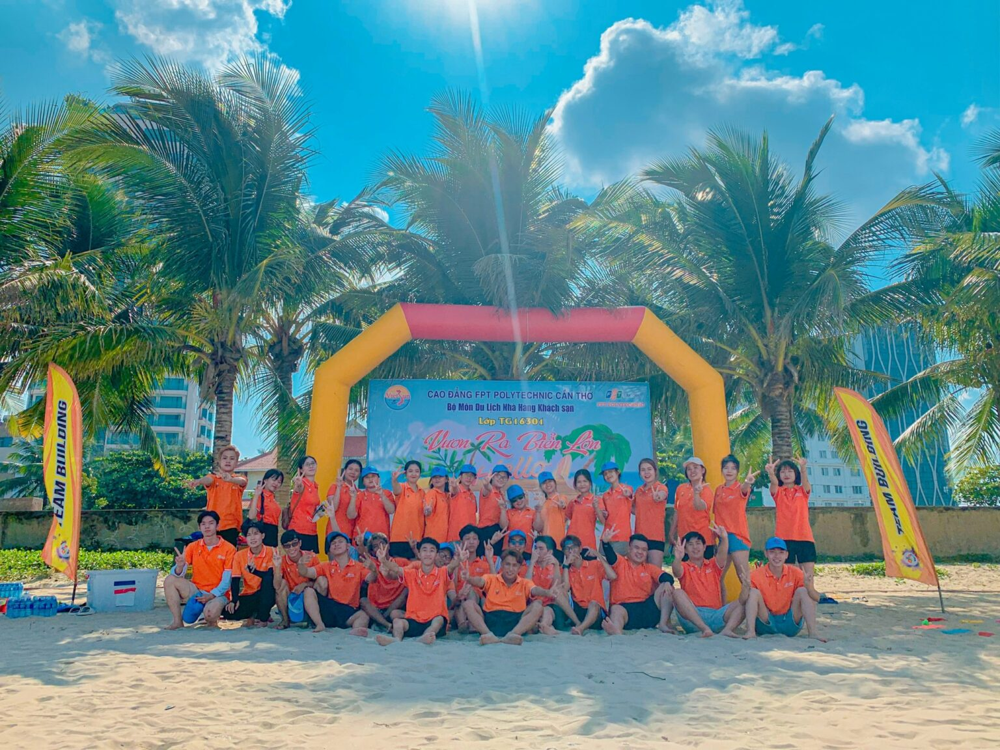

Nhìn lại hành trình xuyên Việt của sinh viên FPT Polytechnic Cần Thơ
Từ ngày 05/9 đến hết ngày 13/9/2022, trường Cao đẳng FPT Polytechnic Cần Thơ đã tổ chức tour thực tập xuyên Việt cho sinh viên chuyên ngành Hướng dẫn du lịch với mong muốn sinh viên được áp dụng kiến thức được học vào thực tế và trải nghiệm công việc của mình trong tương lai.
Tham gia tour thực tập lần này, sinh viên chuyên ngành Hướng dẫn du lịch Cao đẳng FPT Polytechnic Cần Thơ sẽ trải nghiệm 10 ngày “học và hành nghề” với lộ trình “TP. Cần Thơ – Nha Trang – Quy Nhơn – Hội An – Đà Nẵng – Huế – Quảng Bình”. Theo đó, trong hành trình tour, các bạn sinh viên sẽ được ôn bài, học theo nhóm, tìm hiểu về các thông tin dịch vụ của lộ trình, tham quan các địa danh nổi tiếng nhất Việt Nam từ Nam ra Bắc, tiêu biểu như: Biển Nha Trang, gành Đá Đĩa, bán đảo Sơn Trà, động Phong Nha, kinh thành đại nội Huế, Phố Cổ Hội An,…
Đây là cơ hội để các bạn được đồng hành với các anh chị hướng dẫn viên lâu năm trong nghề, được truyền cảm hứng cũng như kinh nghiệm thực hành nghiệp vụ dẫn đoàn. Theo đó, khi chuyến đi kết thúc, mỗi sinh viên sẽ làm nhật ký tour để tổng hợp lại những điều mình học được trong chuyến đi.

Đây là cơ hội hiếm có để sinh viên Cao đẳng FPT Polytechnic có điều kiện trải nghiệm, khám phá văn hóa, con người tại các địa phương và rèn luyện nhiều kỹ năng cần thiết cho công việc quản trị du lịch – khách sạn. Các kỹ năng mềm ấy được gây dựng thông qua các hoạt động đa dạng xuyên suốt hành trình như: hướng dẫn viên tập sự, hotel tour, thử thách sinh tồn…
Sinh viên tham gia một số hoạt động ngoài trời và học cách tổ chức, điều phối chương trình
Dưới sự hướng dẫn của thầy Nguyễn Trung Thành – Chủ Nhiệm bộ môn ngành Quản trị du lịch – Khách sạn Cao đẳng FPT Polytechnic Cần Thơ, các bạn sinh viên nhà FPoly đã được trực tiếp lập kế hoạch, thiết kế, tổ chức, điều hành và hướng dẫn tour.
Ở hoạt động hướng dẫn viên tập sự, tất cả sinh viên tham gia chuyến đi đều được thực tập kỹ năng của một hướng dẫn viên chuyên nghiệp khi làm người dẫn đầu đoàn hành khách trên chuyến xe. Trong suốt chuyến đi, ngoài khám phá những địa điểm du lịch nổi tiếng khắp cả nước, sinh viên còn được tham quan, trải nghiệm môi trường làm việc lý tưởng với cơ cấu vận hành, quản lý chuyên nghiệp, công việc năng động tại các khách sạn, resort lớn trong hành trình. Đây cũng là cơ sở để sinh viên Quản trị du lịch – Khách sạn đặt ra mục tiêu nghề nghiệp phù hợp với khả năng và thúc đẩy sự phát triển bản thân.
Đoàn sinh viên chụp kỷ yếu tại lăng Khải Định (Hương Thủy – Thừa Thiên Huế)
Với những giá trị trải nghiệm bổ ích cũng những cơ hội thực tập thực tế, “Chuyến xe xuyên Việt” dự kiến sẽ trở thành hoạt động định kỳ của ngành Quản trị du lịch – Khách sạn tại Cao đẳng FPT Polytechnic Cần Thơ trong tương lai. Hy vọng sau chuyến đi, các bạn sẽ có những kinh nghiệm, trải nghiệm đáng nhớ và có cho mình những bài học thực tế giá trị, đồng thời có những định hướng rõ ràng cho tương lai của mình.